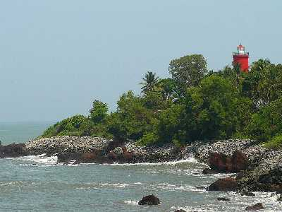

Kannur
Palakkayam Thattu

Tucked away in the verdant greenery of the Western Ghats and soaring at a dizzying altitude of 3500 feet above sea level, Palakayyam Thattu is one of the most beautiful hill stations in the entire state of Kerala. Adorned with luxuriously dense greenery, sky-touching trees and majestic hillocks, the view that Palakayyam Thattu enjoys is one that you will rarely find. Owing to its considerable altitude, this hill station is often visited by low hanging clouds that render the entire atmosphere misty and fresh!
Muzhappilangad Beach

The Muzzhapilangad Drive-in Beach at Kannur is one referred to with many superlatives- as the longest drive-in beach in the whole of India, as one of the cleanest beaches of Kannur and most importantly, as one of the best drive-in beaches that the entire Asian continent has to offer!
St Angelo Fort

St Angelos Fort is definitely one of the most popular and frequently visited attractions of Kannur and for more reasons than one. The polished yet prehistoric structure of this fortress oozes with unadulterated elegance and overwhelming power. Standing ashore in the Arabian sea, St Angelos Fort enjoys a panoramic and unobstructed view of the diorama created by the merger of the magnetic waves and the azure waters. It also overlooks the mesmerising Mopilla Bay, a natural harbour.
Kannur Lighthouse
Being Kerala's first lighthouse ever and Kannur's only one, the Kannur Lighthouse is a pretty big deal. Standing tall at the height of 75 feet, this lighthouse was first built in the early months of 1903. This cylindrical concrete tower has managed to withstand the attacks of the Arabian Sea and has been fully functional for over a century. The Kannur Lighthouse has a balcony with a light that is lit as the evening breaks in to alert the seamen of the land. Treat the history buff in you and visit this site to be impressed by its fascinating history, fall in love with its mesmerising backdrop and be delighted by the impeccable view.